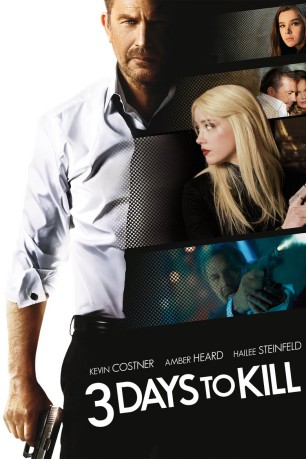

#216 3 Days to Kill
 gesehen am 27.08.2015
gesehen am 27.08.2015
 
 IMDB-Wertung: 6.2 / 10
IMDB-Wertung: 6.2 / 10  Metascore: 40
Metascore: 40 
Secret Service-Agent Ethan Runner ist nicht mehr der Jüngste, dazu noch schwer krank und will mehr Zeit für seine Frau und seine Tochter haben. Diese hatten unter seiner Arbeit und seiner permanenten Abwesenheit sehr gelitten. Eine ominöse Agentin bittet ihn jedoch um die Erfüllung eines letzten Auftrages und bietet ihm die Injektion eines Mittels an, welches sein Leben verlängern kann. Runner willigt ein und macht sich, trotz schwerer Halluzinationen die das Wunder-Medikament mit sich bringt, an die Arbeit.
Jahr: 2014
Dauer: 117 Minuten
FSK: 12
Land: USA Studio: Relativity MediaTonspuren:
Untertitel:
Auflösung: 720p (1280×536) Größe: 2990 MB
Genre: Action, Drama, Thriller
Regisseur: McG
Drehbuch: Adi Hasak, Luc Besson, Luc Besson
Soundtrack: Guillaume Roussel
Darsteller:
 Kevin Costner als Ethan Renner
Kevin Costner als Ethan Renner Amber Heard als Vivi Delay
Amber Heard als Vivi Delay Hailee Steinfeld als Zooey Renner
Hailee Steinfeld als Zooey Renner Connie Nielsen als Christine Renner
Connie Nielsen als Christine Renner Tómas Lemarquis als The Albino
Tómas Lemarquis als The Albino Richard Sammel als The Wolf
Richard Sammel als The Wolf Jonas Bloquet als Hugh
Jonas Bloquet als Hugh Eriq Ebouaney als Jules
Eriq Ebouaney als Jules Xavier Lemaître als Handsome Banker
Xavier Lemaître als Handsome Banker Rupert Wynne-James als Hugh's Father
Rupert Wynne-James als Hugh's Father- Peter J. Chaffey als Agent 1
- Lamont Thompson als Techie
- David Coburn als Suit in Budapest
- Omid Zader als Sergei
 Raymond J. Barry als CIA Employee
Raymond J. Barry als CIA Employee Scott Burn als The Butcher
Scott Burn als The Butcher Dragana Atlija als Tennis Woman , uncredited
Dragana Atlija als Tennis Woman , uncredited- Angie Russo als Party girl , uncredited
- Mickael De Sinno als Waiter , uncredited
- Marc Andréoni als Mitat Yilmaz
 Bruno Ricci als Guido
Bruno Ricci als Guido- Joakhim Sigue als Abbate
- Alison Valence als Sumia
- Big John als Louis
- Michaël Vander-Meiren als Jacques
- Paolo Calia als JPG Salesman
- Éric Naggar als Attorney
- Alexis Jacquin als Young Man
- Frederick Malahieude als Tied Up Man
- Patty Hannock als School Principal
- Marie Guillard als Mitat's Wife
- Alizee Delaruelle als Twin Girl #1
- Ilyana Delaruelle als Twin Girl #2
- Laurent Richard als Sergeant
- Romane Ferreira als Young Zooey
- Philippe Reyno als Young Agent Vivi
- Axel Keravec als Kid in the Bus
- Laure Gouget als Mother of Kid in the Bus
- Clement Boegler als Waiter
- Shane Vives-Atsara Woodward als Agent Axel
- Milutin Milosevic als Techie
- Maï Anh Le als Yasmin
- James Owen als Hungarian Doctor
- Miodrag Stevanovic als Kiosk Owner
- Rob Roy Fitzgerald als CIA Employee
- Vincent Geirnaert als (uncredited
- Dàrrell Lee Hall als Boy outside Principal's office , uncredited
- Radoje Jelic als Albino Guard #3 , uncredited
- Lexie Kendrick als Yasmin , uncredited
- Karine Pedurand als (uncredited
Datei: X:\2014(A-F)\3 Days to Kill (2014, FSK12, 1280x536).mkv seit 14.02.2015
Festplatte: HD 2013(I-Z)-2014(A-Z)
 Es gibt insgesamt 119 Filme in der Gruppe '2014(A-F)'
Es gibt insgesamt 119 Filme in der Gruppe '2014(A-F)'